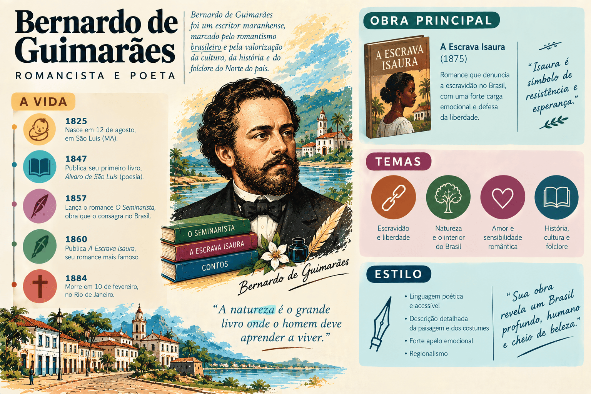

Bernardo Guimarães: biografia, obras, características literárias e legado
Bernardo Guimarães foi romancista, poeta, contista, dramaturgo, professor e magistrado brasileiro. Considerado um dos principais expoentes da prosa do Romantismo no Brasil, desempenhou papel pioneiro e decisivo na interiorização da nossa ficção, desbravando o sertão do Brasil Central — com ênfase nas paisagens, vilas, costumes e tipos humanos de Minas Gerais e Goiás.
Seu nome completo era Bernardo Joaquim da Silva Guimarães. Nascido em Ouro Preto, em 1825, viveu a efervescência política e cultural do Segundo Reinado, aliando a formação jurídica em São Paulo e a prática da magistratura em comarcas remotas a uma produção literária fértil e de extraordinário alcance popular.
Autor de A Escrava Isaura (1875), romance de apelo abolicionista que conquistou fama internacional por meio de sucessivas traduções e adaptações televisivas, Bernardo Guimarães também legou à literatura nacional obras de densa crítica moral e psicológica, como O Seminarista (1872) — contundente denúncia do celibato clerical forçado e do autoritarismo patriarcal —, além de narrativas sertanejas fundamentais como O Garimpeiro (1872) e O Ermitão de Muquém (1869).
Patrono da Cadeira nº 5 da Academia Brasileira de Letras, Bernardo Guimarães é autor indispensável para o estudo do Romantismo no Ensino Médio, sendo cobrado com frequência no ENEM, no PAES UEMA e nos vestibulares mais concorridos do país.

Bernardo Guimarães em resumo
- Nome completo: Bernardo Joaquim da Silva Guimarães.
- Nascimento: 15 de agosto de 1825, em Ouro Preto, Minas Gerais.
- Falecimento: 1º de maio de 1884, em Ouro Preto, Minas Gerais.
- Movimento literário: Romantismo (Segunda Geração na poesia e Terceira Geração/Regionalismo na prosa).
- Gêneros cultivados: romance regionalista, romance de costumes, romance histórico, conto, novela e poesia lírica/satírica.
- Obras principais: A Escrava Isaura (1875), O Seminarista (1872), O Garimpeiro (1872) e O Ermitão de Muquém (1869).
- Espaço geográfico retratado: o sertão de Minas Gerais (Vale do Paraíba, Triângulo Mineiro, Mantiqueira) e os planaltos de Goiás (Catalão e Rio Meia Ponte).
- Instituição: patrono da Cadeira nº 5 da Academia Brasileira de Letras (fundada por Raimundo Correia).
- Estilo e recursos: enredo folhetinesco e melodramático, forte oralidade e registro do falar caipira/sertanejo, defesa humanitária contra a escravidão, crítica ao patriarcalismo e à imposição clerical, e ambientação na natureza rústica do cerrado e das montanhas mineiras.
Quem foi Bernardo Guimarães?
Bernardo Joaquim da Silva Guimarães nasceu em Ouro Preto, então capital da Província de Minas Gerais, em 15 de agosto de 1825. Era filho de João Joaquim da Silva Guimarães, comerciante de ascendência portuguesa e poeta amador, e de Constança Beatriz de Oliveira Guimarães. Ainda criança, mudou-se com a família para Uberaba, no Triângulo Mineiro, e mais tarde viveu em Campo Belo, experiências que lhe permitiram vivenciar desde cedo o cotidiano rústico, as tradições dos tropeiros e a oralidade sertaneja.
Em 1847, Bernardo Guimarães matriculou-se na Faculdade de Direito do Largo de São Francisco, em São Paulo. Durante os anos acadêmicos, destacou-se pela inteligência viva, pela boemia e pela participação ativa na lendária "Sociedade Epicureia", agremiação estudantil inspirada nos ideais ultrarromânticos de Lord Byron, Álvares de Azevedo e Aureliano Lessa. Nesse ambiente de irreverência juvenil, produziu poemas de forte teor erótico, burlesco e paródico, entre os quais o célebre poema humorístico "A Origem do Mênstruo".
A magistratura no sertão de Goiás e a revelação do Brasil Central
Bacharel em Direito em 1852, Bernardo Guimarães foi nomeado juiz municipal e de órfãos na distante vila de Catalão, na província de Goiás. A permanência em solo goiano, onde permaneceu até 1854 e posteriormente em novo período na década de 1860, transformou-se no elemento fundador de sua vocação de romancista regionalista.
Viajando a cavalo por centenas de quilômetros pelo cerrado e pelas margens dos rios Paranaíba e Meia Ponte, Bernardo conviveu diretamente com garimpeiros à caça de diamantes, posseiros, vaqueiros e romeiros devotos de romarias tradicionais. Esse contato íntimo com o Brasil profundo forneceu-lhe a matéria-prima para obras como O Ermitão de Muquém, O Garimpeiro e O Índio Afonso, diferenciando-o dos escritores românticos que idealizavam o homem do campo apenas com base em leituras de gabinete.
Maturidade literária, magistério e consagração em Minas Gerais
De volta a Minas Gerais, exerceu cargos públicos como juiz de direito em Queluz (atual Conselheiro Lafaiete) e advogado em Ouro Preto. Também viveu temporadas no Rio de Janeiro, onde trabalhou como jornalista e colaborador de periódicos como A Atualidade e Diário do Rio de Janeiro.
Em 1867, casou-se com Teresa Maria Gomes Guimarães, com quem teve oito filhos — entre eles o engenheiro e escritor Afonso Henrique da Silva Guimarães (pai do poeta simbolista Alphonsus de Guimaraens). Em 1872, assumiu a cadeira de Retórica e Poética no prestigioso Liceu Mineiro de Ouro Preto.
A década de 1870 marcou o apogeu de sua criatividade e consagração editorial: em poucos anos, publicou sucessos estrondosos como O Seminarista (1872), O Garimpeiro (1872) e A Escrava Isaura (1875). Apesar do imenso reconhecimento popular, Bernardo Guimarães enfrentou dificuldades financeiras crônicas ao longo de toda a vida, agravadas por problemas de saúde. Faleceu em sua cidade natal, Ouro Preto, em 1º de maio de 1884, aos 58 anos.
Contexto histórico: Segundo Reinado, escravismo e a interiorização da prosa
A produção ficcional de Bernardo Guimarães desenvolveu-se na segunda metade do século XIX, inserida em transformações estruturais da sociedade brasileira:
- a consolidação do Segundo Reinado sob Dom Pedro II e a busca por símbolos de identidade nacional autêntica após a Independência;
- o esgotamento do Indianismo romântico, que abriu espaço para a curiosidade dos leitores sobre o homem comum do interior (o tropeiro, o garimpeiro, o capiau);
- a ascensão da campanha abolicionista após o término da Guerra do Paraguai (1870) e a promulgação da Lei do Ventre Livre (1871);
- o poder tirânico exercido pelos senhores de terras e de escravizados no meio rural, onde o patriarca detinha autoridade absoluta sobre a família, agregados e cativos;
- a influência e o rigor disciplinar da Igreja Católica no meio provinciano, estimulando famílias abastadas a encaminhar os filhos mais velhos ao sacerdócio para obter prestígio social e indulgências religiosas.
Ponto importante: Diferente de José de Alencar, que retratou o Rio de Janeiro aristocrático e o sertão cearense com forte apelo mítico, Bernardo Guimarães aproximou a literatura do anedotário popular, dos causos orais e da geografia real das minas e do cerrado goiano.
Características literárias de Bernardo Guimarães
A prosa de Bernardo Guimarães mescla o idealismo sentimental do Romantismo a uma aguçada sensibilidade documental sobre o cotidiano brasileiro:
- Regionalismo do Brasil Central e cor local: descrições vivas da vegetação do cerrado, das serras mineiras, dos leitos de rios diamantíferos, das cavalgadas, das romarias religiosas e dos pousos de tropas.
- Estrutura melodramática e folhetinesca: enredos construídos sob o maniqueísmo ético rigoroso (virtude pura contra maldade absoluta), amores proibidos, sequestros, fugas espetaculares, disfarces, revelações de identidade e finais triunfais com o castigo dos perversos.
- Registro da oralidade e do vocabulário sertanejo: incorporação de modismos linguísticos regionais, ditados populares, gírias caipiras e expressões do cotidiano mineiro e goiano, quebrando a rigidez do português lusitano.
- Crítica ao autoritarismo patriarcal e ao clericalismo: coragem temática ao denunciar a opressão dos pais sobre os filhos e a tragédia humana gerada pela imposição do celibato eclesiástico em O Seminarista.
- Campanha abolicionista de feição sentimental: condenação moral da escravidão a partir do sofrimento da escravizada nobre de espírito e perseguida pela lascívia do senhor em A Escrava Isaura.
- Gosto pelo pitoresco, pelo lendário e pelo sobrenatural: fascínio pelas lendas sertanejas, causos de assombração, milagres de santos e tradições folclóricas populares, como demonstrado em Lendas e Romances e A Ilha Maldita.
Principais obras de Bernardo Guimarães
| Obra | Ano | Gênero | Eixo temático e importância |
|---|---|---|---|
| Cantos da Solidão | 1852 | Poesia lírica | Estreia poética; lirismo melancólico e influência ultrarromântica da fase de São Paulo. |
| O Ermitão de Muquém | 1869 | Romance regionalista | Primeiro romance do autor; ambientado em Goiás, recria a fundação da romaria de Nossa Senhora da Abadia. |
| Lendas e Romances | 1871 | Contos e novelas | Coletânea de narrativas rurais, costumes sertanejos e causos de assombração do interior. |
| O Garimpeiro | 1872 | Romance regionalista | Retrata a febre dos diamantes no sertão de Bagagem (Minas Gerais) e o amor entre Elias e Lúcia. |
| O Seminarista | 1872 | Romance de costumes e crítica | Obra-prima dramática do autor; crítica feroz ao celibato clerical forçado e ao patriarcalismo rural. |
| O Índio Afonso | 1873 | Romance regionalista | Conflito entre brancos e povos indígenas no sertão de Goiás, explorando o banditismo e a vingança. |
| A Escrava Isaura | 1875 | Romance melodramático e abolicionista | Maior sucesso popular do autor; relata a fuga e o martírio de uma escravizada branca no Brasil escravocrata. |
| Maurício ou Os Paulistas em São João del-Rei | 1877 | Romance histórico | Reconstituição histórica ambientada no século XVIII durante a Guerra dos Emboabas em Minas Gerais. |
| A Ilha Maldita | 1879 | Novela fantástica e de mistério | Narrativa envolta em atmosfera gótica, mistério e superstições em uma ilha no litoral fluminense. |
| Rosaura, a Enjeitada | 1883 | Romance de costumes | Analisa o preconceito social contra filhos ilegítimos e abandonados na sociedade mineira oitocentista. |
| Folhas de Outono | 1883 | Poesia lírica | Último livro de versos; tom reflexivo, saudosista e meditativo sobre o envelhecimento e a finitude. |
Análise aprofundada das obras fundamentais
1. A Escrava Isaura (1875)
Lançado em 1875, no momento em que o movimento abolicionista ganhava força após a aprovação da Lei do Ventre Livre (1871), A Escrava Isaura transformou-se no romance de maior popularidade de Bernardo Guimarães e um dos maiores êxitos comerciais da ficção brasileira em todo o mundo.
A narrativa acompanha a trajetória sofrida de Isaura, jovem escravizada de pele absolutamente branca, filha da mucama Juliana com o feitor português Miguel. Nascida na fazenda do Comendador Almeida, em Campos dos Goytacazes (Rio de Janeiro), Isaura é educada com requinte aristocrático pela benevolente matriarca da casa: aprende a tocar piano, canta com perfeição lírica, estuda francês e italiano e assimila maneiras aristocráticas.
Com a morte de seus protetores, Isaura passa a pertencer ao herdeiro da propriedade, o vilão Leôncio. Casado por conveniência financeira com Malvina, Leôncio é um proprietário devasso, cruel e consumido pelo vício do jogo. Enamorado obsessivamente de Isaura, ele tenta seduzi-la por meio de ameaças e castigos corporais, recusando-se a vender sua carta de alforria mesmo quando o pai da jovem, Miguel, reúne uma quantia vultosa para pagar o resgate.
Auxiliada por Miguel, Isaura foge para o Nordeste e instala-se no Recife sob a falsa identidade de Elvira. Na capital pernambucana, passa a frequentar a boa sociedade e conhece o jovem e nobre bacharel abolicionista Álvaro, por quem se apaixona intensamente. O segredo da moça, no entanto, é desmascarado em um sarau público pelo ganancioso Martinho, que a reconhece por meio de anúncios de jornais e exige a recompensa prometida por Leôncio.
Reconduzida à força para a fazenda de Campos, Isaura é submetida a humilhações extremas por Leôncio, que decide obrigá-la a casar-se com o disforme e grotesco jardineiro Belchior. No momento culminante da cerimônia matrimonial forçada, Álvaro invade a propriedade munido de documentos legais: ele havia adquirido todas as hipotecas e títulos de dívida de Leôncio, tornando-se o proprietário legal da fazenda e dos bens. Diante da ruína financeira e da desonra pública, Leôncio tranca-se em seu gabinete e comete suicídio disparando um tiro contra o coração, enquanto Isaura e Álvaro celebram a conquista da liberdade e do amor.
Debate crítico contemporâneo: A crítica moderna destaca que, embora o romance tenha desempenhado papel humanitário incontestável na sensibilização popular contra o cativeiro, apresenta uma contradição ideológica típica do Romantismo: Bernardo Guimarães escolheu uma escravizada branca, educada e virtuosa para comover o leitor da elite senhorial. A escravidão é condenada pelo romance não como um mal estrutural que violentava milhões de africanos e afrodescendentes negros, mas como uma aberração por submeter ao cativeiro alguém que era indistinguível de uma dama da alta sociedade.
2. O Seminarista (1872)
Reconhecido pela historiografia literária como a obra-prima estética de Bernardo Guimarães, O Seminarista destaca-se pela maturidade de sua carpintaria dramática, pelo aprofundamento psicológico e pela contundente crítica sociorreligiosa à sociedade patriarcal de Minas Gerais.
O enredo se desenvolve a partir do amor puro e inocente de infância entre Eugênio, filho único do orgulhoso e autoritário fazendeiro Capitão Antunes, e Margarida, filha de uma humilde agregada da propriedade rural. Ao perceber o nascimento da atração entre os jovens e temendo uma aliança conjugal com uma mulher sem fortuna, o Capitão Antunes e sua esposa decidem afastar o filho, obrigando-o a seguir a carreira religiosa para aumentar o renome familiar perante a província.
Com apenas quinze anos, Eugênio é internado no rígido Seminário de Congonhas do Campo. Ali, submetido a uma rotina de orações claustrofóbicas, leituras místicas e punições disciplinares, passa anos travando uma dolorosa batalha interior entre a devoção a Deus e a chama indestrutível do amor por Margarida. O autor expõe com maestria a hipocrisia dos sacerdotes que estimulam o autoflagelo e a repressão dos instintos naturais do jovem seminarista.
Durante uma visita à fazenda durante as férias, o amor entre Eugênio e Margarida renasce com intensidade irresistível. Desesperado, o Capitão Antunes recorre a uma farsa maquiavélica: expulsa Margarida e a mãe da fazenda e faz chegar a Eugênio a falsa notícia de que a moça havia se casado com outro homem e abandonado o sertão.
Abalado e acreditando na suposta traição da amada, Eugênio renuncia ao mundo e aceita receber as ordens sacras, tornando-se sacerdote. O desfecho trágico atinge o clímax no dia da celebração de sua primeira missa solene na paróquia da vila natal: no momento da elevação da hóstia, adentra a igreja um cortejo fúnebre conduzindo o féretro de Margarida, que morrera de tuberculose e desespero de amor. Ao erguer o cálice sagrado e reconhecer o cadáver da amada no esquife, Eugênio é acometido por um ataque fulminante de loucura: arranca a casula e os paramentos litúrgicos, profana o altar aos berros e atira-se sobre o cadáver de Margarida, beijando seus lábios frios diante dos fiéis estarrecidos.
A tese central de O Seminarista: Bernardo Guimarães sustenta uma tese abertamente anticlerical e humanista: o amor romântico e os afetos humanos são dádivas divinas que jamais poderiam ser suprimidas por dogmas artificiais da Igreja, como o celibato obrigatório. Para o autor, obrigar jovens sem genuína vocação ao voto de castidade era transformá-los em monstros morais ou loucos desesperados.
3. O Garimpeiro (1872)
Ambientado no sertão mineiro de Bagagem (atual município de Estrela do Sul) durante a década de 1850, O Garimpeiro retrata o fascínio, a cobiça e a decadência gerados pela descoberta de grandes diamantes no Brasil Central.
A trama narra a história de amor entre o jovem rústico e corajoso Elias e a jovem Lúcia, filha do abastado fazendeiro Capitão Simão. Rejeitado pelo pai da moça por não possuir fortuna, Elias jura enriquecer e lança-se nas perigosas lavras de garimpo do rio Bagagem. O romance oferece um quadro etnográfico minucioso da vida nas bateias, das rivalidades entre os exploradores e do contraste entre a ambição destruidora e a pureza moral do amor sertanejo, culminando no achado providencial de uma gema lendária que permite a realização amorosa dos protagonistas.
4. O Ermitão de Muquém (1869)
Primeiro romance publicado por Bernardo Guimarães, a obra baseia-se em uma tradição oral recolhida pelo próprio autor durante o período em que exerceu a magistratura em Goiás. O enredo narra a tragédia de Gonçalo, jovem que, após cometer um assassinato impulsionado pelo ciúme, foge para o interior agreste e isola-se nas matas de Muquém. Consumido pelo remorso e pela penitência cristã, transforma-se em um ermitão venerado pelos povos da região, cuja vida ascética dá origem à famosa romaria de Nossa Senhora da Abadia, evento religioso que atrai milhares de peregrinos até os dias de hoje.
Bernardo Guimarães vs. José de Alencar: dois olhares sobre o Regionalismo
Bernardo Guimarães e José de Alencar são os dois maiores artífices da prosa romântica do século XIX no Brasil. O quadro abaixo sintetiza as afinidades e as profundas diferenças de abordagem entre ambos:
| Aspecto | Bernardo Guimarães | José de Alencar |
|---|---|---|
| Regiões privilegiadas | O sertão do Brasil Central: vales de Minas Gerais e o cerrado agreste de Goiás. | O litoral do Rio de Janeiro (romance urbano), o sertão cearense (O Sertanejo) e os pampas (O Gaúcho). |
| Projeto estético | Contador de causos e histórias populares; narrativa espontânea, acessível e melodramática. | Arquiteto consciente de um projeto nacional de literatura; estilo culto, elaborado e poético. |
| Linguagem e estilo | Registro direto da oralidade popular caipira e sertaneja, com modismos do interior. | Pesquisa vocabular erudita, estilização poética dos falares regionais e prosa sinfônica. |
| Visão do sertanejo | Homem rústico, espontâneo, devoto, vivendo o cotidiano de festas, garimpos e roças. | Figura idealizada como cavaleiro nobre dos trópicos, dotada de heroísmo quase épico. |
| Crítica institucional | Ataque frontal ao celibato eclesiástico (O Seminarista) e condenação da escravidão. | Visão conservadora e conciliadora das instituições imperiais, da Igreja e da Monarquia. |
Trechos famosos e seus significados
- “Deus não fez a escravidão; o cativeiro é uma lei dos homens, obra do egoísmo e da tirania que pesa sobre a fronte de criaturas inocentes.” — fala célebre de Isaura em A Escrava Isaura, na qual a personagem invoca os princípios do direito natural cristão para contestar a legitimidade do regime escravocrata imperial.
- “Arrancou a casula e atirou-a longe; caiu sobre o esquife de Margarida, colando seus lábios convulsos nos lábios gélidos da defunta. Eugênio não era mais um sacerdote; era um amante desesperado, um louco furioso...” — clímax trágico de O Seminarista, simbolizando a vitória definitiva da natureza humana e do amor carnal sobre as convenções eclesiásticas castradoras.
- “O sertão não é o deserto; é o coração vivo do Brasil, onde o homem simples e livre lavra a terra, canta suas dores à viola e desafia a força das matas.” — reflexão presente em O Garimpeiro que exalta a dignidade moral do homem sertanejo frente aos artifícios da Corte.
Importância e legado de Bernardo Guimarães
A contribuição de Bernardo Guimarães para a literatura brasileira consolidou a autonomia da prosa de ficção nacional:
- Descentralizou a literatura brasileira, revelando a geografia física e cultural do interior de Minas Gerais e de Goiás para os centros urbanos do país;
- Criou na personagem Isaura o arquétipo mais popular da ficção romântica antiescravista brasileira, extrapolando o livro para se tornar um fenômeno da teledramaturgia mundial;
- Antecipou o romance de denúncia psicológica e social com O Seminarista, abrindo precedentes para as obras anticlericais do Realismo de Eça de Queirós e Aluísio Azevedo;
- Valorizou o patrimônio imaterial brasileiro ao registrar lendas sertanejas, festividades populares, romarias religiosas e causos de beira de fogueira;
- Consagrou-se como patrono da Cadeira nº 5 da Academia Brasileira de Letras, fundada pelo poeta parnasiano Raimundo Correia.
Bernardo Guimarães no ENEM, no PAES UEMA e nos vestibulares
Bernardo Guimarães é leitura frequente e temática de relevo no ENEM e em vestibulares tradicionais, sobretudo pela interseção entre literatura, história imperial e representações regionais.
O que mais aparece nas provas?
- A representação da escravidão sob a ótica romântica em A Escrava Isaura (o melodrama, o maniqueísmo entre Leôncio e Álvaro e o paradoxo da escrava branca);
- O conflito entre autoritarismo patriarcal, dogma religioso e amor carnal no desfecho de O Seminarista;
- A incorporação da cor local e do vocabulário do sertão central brasileiro na prosa de O Garimpeiro;
- A estrutura do romance de folhetim (capítulos com ganchos de suspense, perseguições e intervenção de acasos favoráveis aos heróis virtuosos);
- A comparação entre o regionalismo romântico de Bernardo Guimarães e o regionalismo crítico do Modernismo de 1930 (como em Graciliano Ramos e José Lins do Rego).
Como interpretar um trecho de Bernardo Guimarães?
- Identifique a função do narrador em terceira pessoa, que com frequência dialoga com o leitor e expressa julgamentos morais explícitos sobre os atos dos vilões e heróis.
- Observe a adjetivação sentimental: virtudes nobres, olhares puros, almas cândidas em contraste com almas torpes e paixões aviltantes.
- Preste atenção aos elementos da paisagem física (montanhas, rios, matas, cerrados) que funcionam como extensão emocional dos sentimentos das personagens.
- Nos trechos dialogados, atente para a naturalidade das falas e a inserção de expressões e hábitos rurais.
Erros comuns ao estudar Bernardo Guimarães
- Classificar A Escrava Isaura como obra realista ou naturalista: embora denuncie os horrores do cativeiro, o romance é integralmente romântico e melodramático, baseado em heróis imaculados, vilões perversos e soluções mágicas de enredo.
- Achar que o autor atacava a religião cristã em O Seminarista: Bernardo Guimarães não condena a fé em Deus ou o cristianismo, mas sim a imposição autoritária dos pais e o dogma humano do celibato clerical obrigatório.
- Supor que Bernardo Guimarães escreveu apenas sobre Minas Gerais: sua vivência em Goiás como magistrado foi fundamental para a elaboração de clássicos goianos pioneiros como O Ermitão de Muquém e O Índio Afonso.
- Desconsiderar sua produção poética: antes de se consagrar como romancista na década de 1870, Bernardo destacou-se na poesia ultrarromântica e satírica da geração de 1850.
- Confundir sua postura política com abolicionismo radical: Bernardo Guimarães pertencia à elite imperial e propunha uma superação gradual e sentimental da escravidão, alinhada à monarquia constitucional.
Quiz sobre Bernardo Guimarães
Questões de interpretação — nível avançado
Questão 1 — No romance A Escrava Isaura (1875), qual característica da protagonista é apontada com frequência pelos estudos literários contemporâneos como uma limitação ideológica do abolicionismo romântico do século XIX?
Questão 2 — Em O Seminarista (1872), qual é o principal alvo da crítica institucional e moral articulada pelo enredo do romance?
Questão 3 — Qual elemento geográfico e cultural distingue de modo singular a prosa regionalista de Bernardo Guimarães no conjunto do Romantismo brasileiro?
Questão 4 — Como se resolve o conflito entre o vilão Leôncio e a escravizada Isaura no desfecho do romance A Escrava Isaura?
Questão 5 — No romance O Garimpeiro (1872), qual é o motor central da trama que conduz o jovem Elias a desafiar os perigos do sertão de Bagagem?
Questão 6 — O que provoca o surto de loucura do padre Eugênio no clímax dramático de O Seminarista?
Resumo final sobre Bernardo Guimarães
- Nasceu em Ouro Preto (MG) em 1825, formou-se em Direito em São Paulo e faleceu em Ouro Preto em 1884.
- Patrono da Cadeira nº 5 da Academia Brasileira de Letras.
- Pioneiro do regionalismo do Brasil Central, retratando o sertão de Minas Gerais e de Goiás.
- Participou da Sociedade Epicureia em São Paulo, cultivando lírica ultrarromântica, humorística e erótica.
- Exerceu a magistratura em Catalão (Goiás), experiência decisiva para o contato direto com a cultura e o homem sertanejo.
- Publicou A Escrava Isaura em 1875, marco de apelo abolicionista sentimental e melodrama de imensa repercussão mundial.
- Publicou O Seminarista em 1872, obra-prima dramática que ataca o patriarcalismo rural e a imposição do celibato clerical.
- Destacou-se em narrativas sertanejas com O Garimpeiro (1872) e O Ermitão de Muquém (1869).
- Caracterizou-se pelo estilo folhetinesco, pela forte oralidade e pela incorporação do léxico caipira e sertanejo à literatura brasileira.
Perguntas frequentes sobre Bernardo Guimarães
Quem foi Bernardo Guimarães?
Foi um importante romancista, poeta, magistrado e professor mineiro do século XIX, consagrado como um dos maiores expoentes da prosa do Romantismo no Brasil e pioneiro do regionalismo em Minas Gerais e Goiás.
Qual é a principal obra de Bernardo Guimarães?
Sua obra mais célebre mundialmente é o romance A Escrava Isaura (1875), embora a crítica literária aponte O Seminarista (1872) como sua mais perfeita realização estética e dramática.
Por que a escrava Isaura foi retratada como branca no romance?
Para sensibilizar a sociedade leitora do século XIX, composta majoritariamente pela elite proprietária de escravizados, Bernardo Guimarães construiu uma heroína branca e refinada cuja condição de cativeiro provocava indignação moral e empatia imediata.
Qual é o tema central de "O Seminarista"?
O romance aborda o drama do celibato clerical forçado, denunciando o autoritarismo dos pais que obrigavam os filhos ao sacerdócio sem vocação e as terríveis consequências psicológicas da repressão do amor humano.
Quais regiões do Brasil foram exploradas na literatura de Bernardo Guimarães?
O autor explorou com riqueza etnográfica o sertão do Brasil Central, com destaque para as montanhas e garimpos de Minas Gerais (Bagagem, Ouro Preto) e as cidades e planaltos da província de Goiás (Catalão e Rio Meia Ponte).
Como Bernardo Guimarães retratava a linguagem sertaneja?
Com grande naturalidade e pioneirismo, registrando modismos populares, expressões do linguajar caipira e ditos do homem do campo, aproximando a linguagem escrita da fala cotidiana do povo do interior.
Bernardo Guimarães escreveu apenas romances?
Não. Além de romances regionalistas e de costumes, produziu coletâneas de contos (Lendas e Romances), novelas fantásticas (A Ilha Maldita) e livros de poesia lírica e satírica (Cantos da Solidão e Folhas de Outono).
Qual é a importância de Bernardo Guimarães para a Academia Brasileira de Letras?
Bernardo Guimarães foi escolhido como o patrono da Cadeira nº 5 da Academia Brasileira de Letras, cadeira fundada pelo poeta parnasiano Raimundo Correia em 1897.
Conteúdos relacionados
- Gregório de Matos: biografia, obras, sátiras e poesia barroca
- Cruz e Sousa e Alphonsus de Guimaraens: o Simbolismo no Brasil
- Castro Alves: biografia, obras, características literárias e legado
- Gonçalves Dias: biografia, obras, características literárias e legado
- Aluísio Azevedo: biografia, obras, características literárias e legado
- Machado de Assis: biografia, obras, características literárias e legado
- Conteúdos de Literatura Brasileira
- Mais conteúdos de Literatura Brasileira
Conclusão
A produção literária de Bernardo Guimarães ocupa um capítulo de brilho singular na formação da narrativa brasileira do século XIX. Ao retirar a prosa romântica do exclusivismo dos salões e gabinetes da Corte carioca, o autor mineiro teve o mérito pioneiro de abrir as portas da imaginação nacional para o vasto interior do Brasil Central, imortalizando o garimpeiro, o sertanejo, as lendas do cerrado e os dramas da vida provinciana.
Seja pela contundência crítica de O Seminarista — obra que desafiou as imposições clericais e a autoridade patriarcal em favor da dignidade dos sentimentos humanos —, seja pelo apelo comovente e abolicionista de A Escrava Isaura, Bernardo Guimarães legou à literatura de língua portuguesa personagens inesquecíveis e um testemunho vivo das aspirações, contradições e virtudes do povo brasileiro.
Referências
- ACADEMIA BRASILEIRA DE LETRAS. Bernardo Guimarães: biografia e patrono da Cadeira 5. Disponível em: Acessar.
- BIBLIOTECA NACIONAL DIGITAL. Bernardo Guimarães: acervo de manuscritos e edições originais. Disponível em: Acessar.
- ENCICLOPÉDIA ITAÚ CULTURAL. Bernardo Guimarães. Disponível em: Acessar.
- GUIMARÃES, Bernardo. A Escrava Isaura. São Paulo: Penguin-Companhia, 2012.
- GUIMARÃES, Bernardo. O Seminarista. São Paulo: Martin Claret, 2015.
- GUIMARÃES, Bernardo. O Garimpeiro. Belo Horizonte: Itatiaia, 1990.
- BOSI, Alfredo. História concisa da literatura brasileira. São Paulo: Cultrix, 2017.
- CANDIDO, Antonio. Formação da literatura brasileira: momentos decisivos. Rio de Janeiro: Ouro sobre Azul, 2009.
- VASCONCELOS, Eliane. Bernardo Guimarães: vida e obra. Rio de Janeiro: Fundação Casa de Rui Barbosa, 2000.
Explore Outros Conteúdos
Continue seus estudos acessando outras seções do site Mestre Kira: